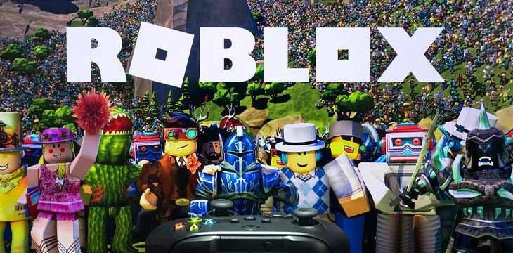
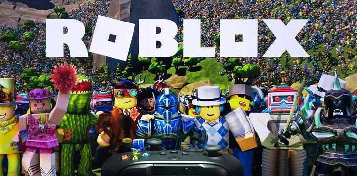

ROBLOX
ROBLOX
ROBLOX — це онлайн-платформа, де гравці мають можливість створювати власні ігри, різноманітні об’єкти, персонажів, локації та ігрові механіки, втілюючи свої ідеї та фантазії у віртуальну реальність, або грати в розваги, розроблені іншими користувачами. Roblox створили 2004 року американці Девід Башуцкі та Ерік Кассел. Спочатку, розглядалась назва GoBlocks, потім DynaBlocks проте проєкт був випущений під назвою Roblox, придуманою Девідом.[2][3] 1 вересня 2006 року Roblox офіційно вийшов з бета-тесту. У березні 2007 року Roblox дав гравцям можливість носити кастомні футболки, а потім, 23 квітня 2008 року можна було носити кастомні штани. У вересні 2008 року появилися так звані гості, через них ти міг гратися не зареєструвавши акаунт. 8 липня 2009 року Roblox створив так званий Builders Club, але на сьогодні він вже став Roblox Premium. 2 квітня 2010 року Roblox створив перший «Egg hunt» у якому треба було зібрати всі яйця і потім, вони будуть у твоєму інвентарі. 1 квітня 2012 року став самий найбільший інцидент в Roblox. Група хакерів та Ellernate взламала акаунт Роблокса і вони завдяки цьому міняли ціни предметів. Група хакерів також поміняли банери на «Грати в Roblox набагато краще чим виходити на вулицю!» і «Я надоїдливий апельсин ХАХАХАХАХАХАХАХХАХАХАХАХАХАХХАХАХАХАХА» і багато інших. 11 лютого 2013 року помер спів засновник Roblox Ерік Кассел від рака. В знак його гравці побудували меморіал де вони казали всі побажання. 1 травня 2014 року розробник ігор TheGamer101 став першою людиною яка заробила 10000 доларів з ігор в Roblox. 18 березня 2015 року Roblox підтримує аудіо-файли формату .ogg 14 квітня 2016 року Roblox видалив Тікси. Перед цим Roblox створив подію Tixapalooza, у якій ти міг купити предмети за так звані Тікси. Причиною видалення стало те, що люди створювали багато акаунтів щоб заробляти більше тіксів, бо кожен день ти отримуєшь по 10 тіксів. 2 жовтня 2017 року Roblox видалив Гостів. 4 грудня 2017 року було видалено форуми. 30 cічня 2018 року гра Meepcity стала першою грою досягнувши 1 мільярд відвідувань. Більшу частину часу платформа була відносно невеликою, почавши суттєве розширення після 2019 року, це зростання було прискорене пандемією COVID-19[4]. До 2019 року компанія залучила $865 млн інвестицій, 2020 року вийшла на фондову біржу Нью-Йорка через прямий лістинг[5]. Першого ж дня її оцінка становила $45 млрд.[6] У серпні 2020 року Roblox мав 164 млн активних користувачів щомісяця, включаючи більш ніж половина всіх американських дітей віком до 16 років[5]. 28 жовтня 2021 року стався один із самих найдовших відключень Roblox, багато людей хотіли промокоди на безкоштовні бурито від фастфуду Chipotle в їхній грі. Та через велике навантаження на гру, сервера Roblox відключилися. Тоді на їхньому сайті де можна подивитися статус серверів було написано «Активний Інцидент». Та через приблизно 2 години, сайт гри відключився, тоді ще через годину сайт показував фото де було написано «Ми робимо речі більш чудовими. Повернемося скоро.». Все повернулося до нормального режиму 31 жовтня 2021 року.[7]
 



матеріали взято з Вікіпедії